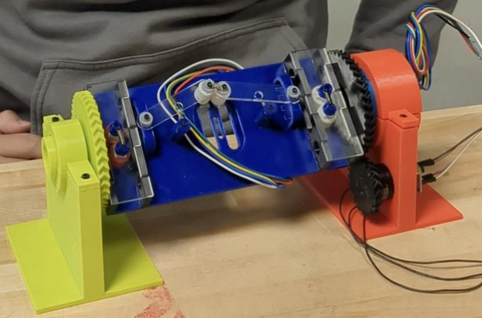

Academic bedside robots · wpi_flanagan2024
WPI telescoping
WPI MQP robotic platform for telescoping neurointerventional catheters (proof of concept)

1 / 9


- Family
- Academic bedside robots (academic)
- Devices
- modular telescoping catheters of several sizes
- Degrees of freedom
- 2 (linear and rotational per catheter module)
- Push
- Friction rollers
- Twist
- Rotating drive unit
- Tested up to
- Bench
- Sim-to-real
- None found — No simulation-trained controller found for this robot.
Testing
- Highest level
- Bench
- What was tested
- several 3-D-printed prototypes built and iterated; qualitative tests only
- Key numbers
- N.R.
Mechanism
- Push (translation)
- friction-roller (driven and support wheels on a board; 3-wheel, straight and S-shaped layouts tested)
- Twist (rotation)
- the whole wheel board rotates through a gear and slip ring (BLDC motors with FOC drivers)
- Device range
- various catheter sizes (N.R.)
- Target anatomy
- neurointervention
Sensing and interface
- Force sensing
- none
- Leader and haptics
- N.R. (micro-ROS over Wi-Fi, EM sensor integration)
- Imaging
- N.R.
- Sterility
- N.R.
Size
- Footprint (mm)
- N.R.
- Mass (kg)
- N.R.
Simulation
- Simulation model
- none found
- Sim-trained controller
- none found
Versions
- Lineage
- 2024 MQP report; builds on earlier WPI MQP guidewire robots (stepper-and-solenoid design; BLDC roller design) described in its background
Sources
- A Robotic Platform for Neurointervention · link [flanagan2024_robotic]
Notes
- Notes
- Student report, no peer review; included because it documents a built prototype (coordinator rule).
This record
- Read level
- full — full (MQP report)
- Picture
- flanagan2024_robotic Fig. 12 (completed 3-wheel test prototype), native embedded image p. 15 of the MQP report ↗ — licence: N.R. (WPI student report on digital.wpi.edu; rights statement not checked); grade B
- Picture changes
- native extract; no crop; not upscaled
- Found by
- gap: Gap searches for robots the other searches missed.
- Data
- JSON · YAML:
records/robots/wpi_flanagan2024.yaml - Correction
- Suggest a correction [repository not created yet]